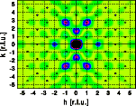
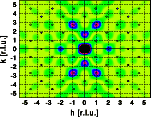

Modification III: Expanding the lattice

Modification
Original structure
Shifting an atom
Expanding the lattice
Goto
Contents
The projection of the structure along [001] in the left image shows the original structure, while the right image shows the modified structure. Note that the distance of all atoms have been increased by a factor of 1.1. The grid gives 0.25 intervalls in fractional coordinates. The origin of the unit cell is at the lower left corner, the horizontal axis is [100], the vertical axis [010].
Comparison of the Fourier transform of the original unit cell (left image) with the Fourier transform of the expanded unit cell (right image) shows that the overall shape of the intensity distribution remains the same while the reciprocal space dimensions have shrunk 10 %. Get a full screen version by clicking on the images below. The combined plot of the Fourier transform of the unit cell and the Bragg reflections (blue circles)shows that the positions of the Bragg reflections have changed accordingly. They too have shifted closer to the reciprocal space origin.
 

The one-dimensional scans do show this phenomenon even more clearly. The new Fourier transform (red curve) is contracted by 10 % compared to the original Fourier transform (blue curve). The scattering intensities of the expanded crystal are shown in green.
Close inspection of the Fourier transforms shows that the corresponding maxima of the blue curve are slightly higher than those of the red curve. This increase is due to the fact that the maxima have shifted to smaller reciprocal space vectors. Closer to the reciprocal space origin the form factors of the atoms are larger and thus the calculated intensity increases. For neutrons the scattering length is independent of the scattering angle. If neutron intensities had been calculated, the intensities would have remained unchanged.
For a real crystal, on the other hand, expansion of the structure is usually associated with increased thermal motion, which reduces the observed intensities. See examples on the effect of thermal motion.